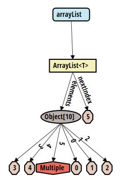
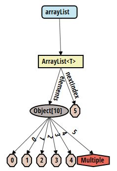
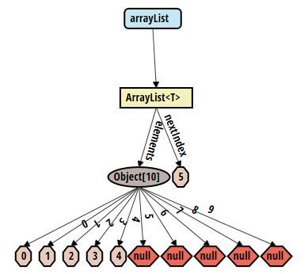

Check out the video version of this tutorial below!
Introduction
This tutorial will guide you through developing a very simple array list with the tool and show you the necessary steps to configure the tool as desired. Look at the manual to get a more general introduction to the tool, or for specific questions. If you haven't installed the tool yet, take a look at the installation description. If you don't know how to open the tool, find out how to use it, and then come back to this tutorial.
Code
We will be developing a very simple array list class. This class will only support the add feature, adding a new element to the end of the list. This tutorial doesn't aim to teach you about developing an array list, but how to use the tool.
Create a class ArrayList in a package arraylist with the following code:
package arraylist;
import java.util.Arrays;
class ArrayList<T> {
T[] elements;
int nextIndex = 0;
ArrayList() {
this.elements = (T[]) new Object[10];
}
void add(T t) {
if (nextIndex >= elements.length) {
this.elements = Arrays.copyOf(elements, elements.length * 2);
}
elements[nextIndex++] = t;
}
}
Additionally, create a Main class in the same package with the following code:
package arraylist;
public class Main {
public static void main(String[] args) {
ArrayList<Integer> arrayList = new ArrayList<>();
for (int i = 0; i < 5; i++) {
arrayList.add(i);
}
System.out.println(arrayList);
}
}
We now have the code to debug. Add a breakpoint to the last line in the Main.main method. That way, the entire list will be shown in the tool. For this tutorial, this is sufficient. Otherwise, of course breakpoints are supported at any place in the code.
Debugging
Let's now debug the program. Before adding any configuration, the tool will show a graph which looks similar in style to the one below:
One can see an issue with this graph. The elements of the array are not ordered correctly. Let's take care of this issue.
Element order
Let's take care of making sure the elements of the array appear in the correct order in the graph. For this, we need to add an ordering constraint. Refer to the manual on how to add a constraint. Add the following constraint:
{
"query": "arraylist.ArrayList<T>.elements.i",
"quantifier": "all",
"order": "(i)<(i+1)"
}
After applying this constraint, the order of the elements is correct and the graph looks like below. Adding the query ArrayList<T>.elements.i allows us to refer to each array element, while being able to refer to it in the order as well. i<i+1 then makes sure that the i-th element is ordered to the left of the (i+1)-st element. Refer to the manual for more details.
Abstraction
In the graph, there is a node Multiple. This node abstracts multiple nodes which are otherwise null. Right-click that node to remove the abstraction and see the underlying nodes. You may also right-click to get more information on the nodes which are abstracted. These null nodes are abstracted due to the following abstraction rule, which is by default part of the system (but may be removed in the configuration):
{
"query": "*",
"quantifier": "all",
"comparison": "*==null",
"count": 4,
"active": true
}
The above rule makes sure that for any node (query "*") with more than 4 null fields (comparison "*==null and count 4), these fields are abstracted to a single node. See the manual for details on how to deactivate this rule. Deactivating the rule then makes the array list appear as below, without any abstraction.
